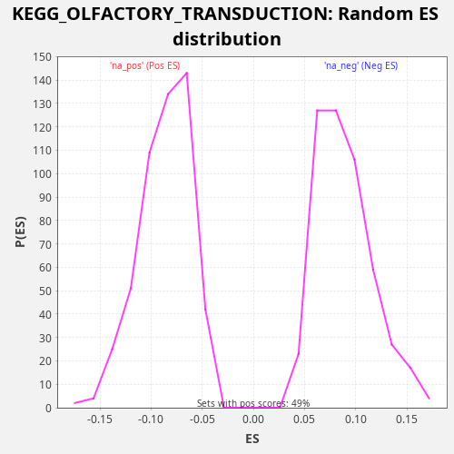

Profile of the Running ES Score & Positions of GeneSet Members on the Rank Ordered List
The same image in compressed SVG format
| Dataset | TCGA |
| Phenotype | NoPhenotypeAvailable |
| Upregulated in class | na_pos |
| GeneSet | KEGG_OLFACTORY_TRANSDUCTION |
| Enrichment Score (ES) | 0.20472467 |
| Normalized Enrichment Score (NES) | 2.309593 |
| Nominal p-value | 0.0 |
| FDR q-value | 0.0072479397 |
| FWER p-Value | 0.064 |
| SYMBOL | RANK IN GENE LIST | RANK METRIC SCORE | RUNNING ES | CORE ENRICHMENT | |
|---|---|---|---|---|---|
| 1 | CLCA4 | 105 | 6.779 | 0.0053 | Yes |
| 2 | CLCA2 | 137 | 5.898 | 0.0145 | Yes |
| 3 | OR3A2 | 532 | 2.529 | 0.0043 | Yes |
| 4 | OR5M11 | 1170 | 1.116 | -0.0188 | Yes |
| 5 | OR13A1 | 1310 | 0.952 | -0.0154 | Yes |
| 6 | OR9K2 | 1467 | 0.838 | -0.0129 | Yes |
| 7 | OR1Q1 | 1733 | 0.656 | -0.0161 | Yes |
| 8 | GUCY2D | 2234 | 0.441 | -0.0320 | Yes |
| 9 | OR56B4 | 2535 | 0.347 | -0.0371 | Yes |
| 10 | OR6B2 | 2784 | 0.278 | -0.0395 | Yes |
| 11 | OR6B3 | 2821 | 0.268 | -0.0305 | Yes |
| 12 | OR2A7 | 2855 | 0.260 | -0.0214 | Yes |
| 13 | OR52L1 | 3072 | 0.222 | -0.0221 | Yes |
| 14 | OR10AD1 | 3152 | 0.208 | -0.0155 | Yes |
| 15 | OR2A4 | 3393 | 0.173 | -0.0174 | Yes |
| 16 | OR2A1 | 3655 | 0.137 | -0.0205 | Yes |
| 17 | OR9A4 | 4063 | 0.096 | -0.0313 | Yes |
| 18 | OR56A5 | 4109 | 0.093 | -0.0229 | Yes |
| 19 | CALML3 | 4277 | 0.081 | -0.0209 | Yes |
| 20 | OR7D2 | 4433 | 0.069 | -0.0183 | Yes |
| 21 | GUCA1B | 4641 | 0.057 | -0.0185 | Yes |
| 22 | CALML6 | 4759 | 0.050 | -0.0139 | Yes |
| 23 | OR2AE1 | 4940 | 0.040 | -0.0126 | Yes |
| 24 | CAMK2G | 5131 | 0.032 | -0.0119 | Yes |
| 25 | OR2A25 | 5213 | 0.029 | -0.0054 | Yes |
| 26 | OR1J1 | 5235 | 0.028 | 0.0044 | Yes |
| 27 | OR2A14 | 5689 | 0.016 | -0.0089 | Yes |
| 28 | OR10H1 | 5831 | 0.013 | -0.0056 | Yes |
| 29 | OR5K2 | 5844 | 0.013 | 0.0046 | Yes |
| 30 | OR2J3 | 6069 | 0.009 | 0.0035 | Yes |
| 31 | CNGA4 | 6140 | 0.008 | 0.0107 | Yes |
| 32 | OR5AU1 | 6331 | 0.006 | 0.0114 | Yes |
| 33 | OR10H2 | 6355 | 0.005 | 0.0210 | Yes |
| 34 | OR11H4 | 6570 | 0.003 | 0.0205 | Yes |
| 35 | OR11H6 | 6666 | 0.003 | 0.0263 | Yes |
| 36 | OR2H2 | 6720 | 0.002 | 0.0343 | Yes |
| 37 | OR1J2 | 6761 | 0.002 | 0.0430 | Yes |
| 38 | OR6A2 | 6931 | 0.001 | 0.0449 | Yes |
| 39 | PRKACB | 6935 | 0.001 | 0.0556 | Yes |
| 40 | OR1J4 | 7153 | 0.000 | 0.0549 | Yes |
| 41 | OR51Q1 | 7211 | 0.000 | 0.0627 | Yes |
| 42 | OR2AG2 | 7349 | 0.000 | 0.0663 | Yes |
| 43 | OR10H5 | 7480 | -0.000 | 0.0702 | Yes |
| 44 | OR56B1 | 7499 | -0.000 | 0.0801 | Yes |
| 45 | OR1L8 | 7595 | -0.000 | 0.0859 | Yes |
| 46 | CALM1 | 7634 | -0.000 | 0.0947 | Yes |
| 47 | OR52D1 | 7689 | -0.000 | 0.1027 | Yes |
| 48 | PRKG2 | 7737 | -0.000 | 0.1111 | Yes |
| 49 | OR2C1 | 7904 | -0.001 | 0.1131 | Yes |
| 50 | OR5K1 | 8352 | -0.004 | 0.1001 | Yes |
| 51 | CALML5 | 8523 | -0.006 | 0.1019 | Yes |
| 52 | OR5P2 | 8594 | -0.007 | 0.1090 | Yes |
| 53 | OR52N2 | 8646 | -0.008 | 0.1172 | Yes |
| 54 | OR2T8 | 8678 | -0.008 | 0.1264 | Yes |
| 55 | OR2B2 | 9202 | -0.017 | 0.1093 | Yes |
| 56 | PDC | 9255 | -0.018 | 0.1174 | Yes |
| 57 | OR2W3 | 9271 | -0.018 | 0.1275 | Yes |
| 58 | OR1F1 | 9375 | -0.021 | 0.1328 | Yes |
| 59 | OR8A1 | 9425 | -0.022 | 0.1411 | Yes |
| 60 | PRKX | 9456 | -0.023 | 0.1504 | Yes |
| 61 | OR2L13 | 9679 | -0.029 | 0.1494 | Yes |
| 62 | OR10A6 | 9685 | -0.029 | 0.1600 | Yes |
| 63 | OR56A3 | 9690 | -0.029 | 0.1706 | Yes |
| 64 | OR10A3 | 9708 | -0.029 | 0.1806 | Yes |
| 65 | PRKACA | 10308 | -0.052 | 0.1595 | Yes |
| 66 | OR13J1 | 10366 | -0.054 | 0.1673 | Yes |
| 67 | OR5P3 | 10378 | -0.055 | 0.1776 | Yes |
| 68 | OR52N4 | 10387 | -0.056 | 0.1880 | Yes |
| 69 | CLCA1 | 10858 | -0.082 | 0.1738 | Yes |
| 70 | OR51B5 | 10935 | -0.087 | 0.1806 | Yes |
| 71 | OR8S1 | 10946 | -0.088 | 0.1909 | Yes |
| 72 | OR7E24 | 10961 | -0.089 | 0.2011 | Yes |
| 73 | PRKACG | 11097 | -0.098 | 0.2047 | Yes |
| 74 | OR51B4 | 11819 | -0.160 | 0.1771 | No |
| 75 | CALM3 | 12222 | -0.209 | 0.1665 | No |
| 76 | CAMK2D | 12680 | -0.285 | 0.1530 | No |
| 77 | PDE1C | 12728 | -0.293 | 0.1613 | No |
| 78 | OR2B6 | 13511 | -0.466 | 0.1304 | No |
| 79 | CALM2 | 14120 | -0.681 | 0.1088 | No |
| 80 | OR7C1 | 14257 | -0.748 | 0.1124 | No |
| 81 | ADCY3 | 14514 | -0.883 | 0.1096 | No |
| 82 | GNAL | 15070 | -1.242 | 0.0909 | No |
| 83 | CAMK2B | 15447 | -1.572 | 0.0817 | No |
| 84 | OR51E1 | 15860 | -2.046 | 0.0705 | No |
| 85 | CNGA3 | 16164 | -2.501 | 0.0652 | No |
| 86 | OR51E2 | 16952 | -4.206 | 0.0341 | No |
| 87 | PRKG1 | 17179 | -4.941 | 0.0329 | No |
| 88 | OR7A5 | 17225 | -5.129 | 0.0413 | No |
| 89 | CAMK2A | 17375 | -5.741 | 0.0442 | No |
| 90 | ARRB2 | 17701 | -7.241 | 0.0378 | No |
| 91 | GUCA1A | 18374 | -13.417 | 0.0127 | No |
| 92 | CNGB1 | 18718 | -26.455 | 0.0053 | No |

{kind=link}
{kind=link}